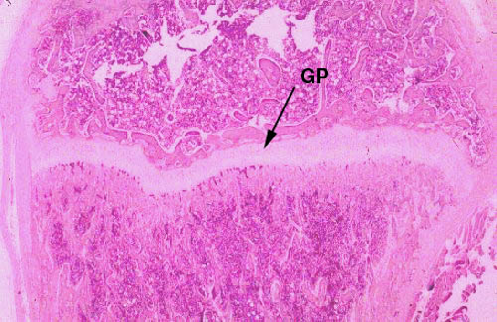
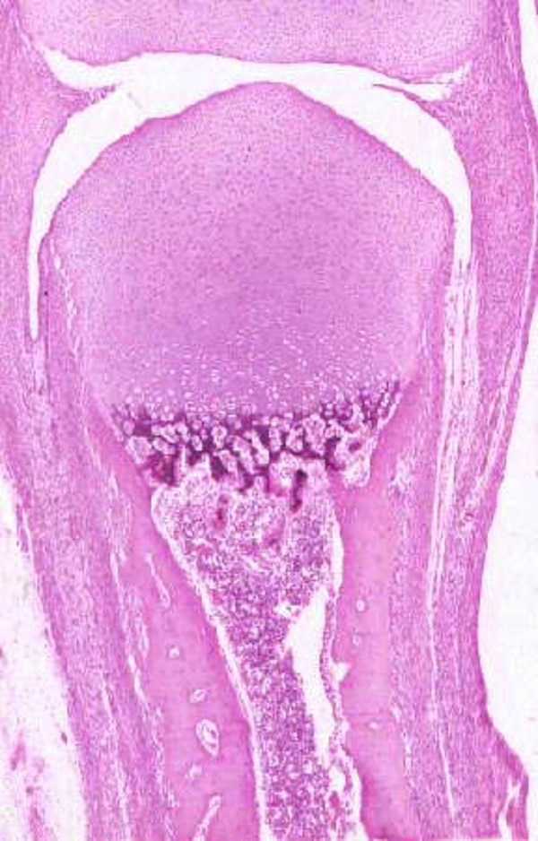
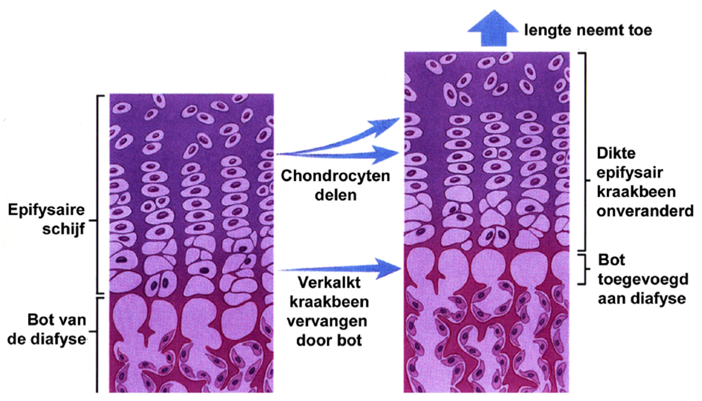
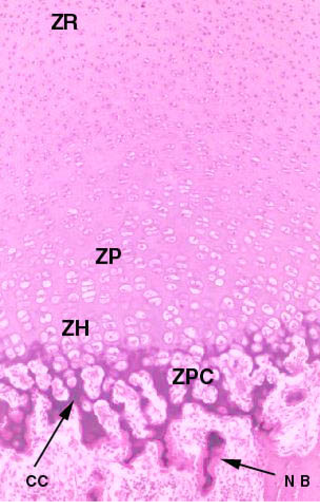

Epifysaire groeischijf
Ter hoogte van de epifysaire groeischijf (GP) van een lang pijpbeen wordt tijdens het proces van de enchondrale botvorming kraakbeen vervangen door been. Anatomisch gezien is dit de epifyse van dit bot. Op deze plaats en aan de tweede epifyse aan het andere uiteinde groeit het bot in de lengte. Het bot zal blijven groeien in de lengte zolang de vorming van nieuw kraakbeen sneller gebeurt dan de altijd maar verder oprukkende botvorming, m.a.w. zolang de epifysaire groeischijf blijft bestaan.
Tijdens de puberteit zullen hormonale veranderingen de proliferatie van kraakbeen gaan afremmen totdat de botvorming de kraakbeenvorming inhaalt en de overhand gaat nemen. Door deze “sluiting van de epifysen” zullen de groeischijfen uiteindelijk verdwijnen en is lengtegroei onmogelijk geworden.
Tijdens de puberteit zullen hormonale veranderingen de proliferatie van kraakbeen gaan afremmen totdat de botvorming de kraakbeenvorming inhaalt en de overhand gaat nemen. Door deze “sluiting van de epifysen” zullen de groeischijfen uiteindelijk verdwijnen en is lengtegroei onmogelijk geworden.

Femur van de muis; H&E-kleuring, paraffinecoupe, 20x
Op dit overzichtsbeeld is de epifysaire groeischijf van een vingerkootje te zien. Bovenaan zie je het “rustende kraakbeen” of rustzone (ZR). Daaronder bevinden zich de proliferatiezone (ZP), de zwellingszone van hypertrofisch kraakbeen (ZH) en de verkalkingszone (ZPC) en tenslotte de verbeningszone (beter zichtbaar op het uitvergrote beeld hieronder).
Het loont beslist de moeite dit beeld eens te vergelijken met het vorige beeld van een groeischijf. Op dit beeld is er slechts één “botvormingscentrum”. Lange pijpbeenderen hebben normaal gezien meerdere zulke centra. (zie verder)
Op dit vergroot beeld van de groeizone zie je duidelijk de isogene groepen in de rustzone (daar het hier gaat om embryonaal en dus uiterst proliferatief kraakbeen, zijn er hier wel wat meer in vergelijking met de mature vorm). In de proliferatiezone vormen deze groepen longitudinale rijen van platte cellen. In de zwellingszone van hypertrofisch kraakbeen beginnen de cellen af te sterven en op te zwellen. Ze zullen nu gaan verkalken en vormen hier de zone waar de osteoblasten (mee aangevoerd via de bloedvaten) zich kunnen ontwikkelen. In de verkalkingszone stellen de roze gekleurde gebieden nieuw bot voor en de paarse gebieden verkalkt kraakbeen dat uiteindelijk de plaats zal moeten ruimen voor bot.
Het loont beslist de moeite dit beeld eens te vergelijken met het vorige beeld van een groeischijf. Op dit beeld is er slechts één “botvormingscentrum”. Lange pijpbeenderen hebben normaal gezien meerdere zulke centra. (zie verder)
Op dit vergroot beeld van de groeizone zie je duidelijk de isogene groepen in de rustzone (daar het hier gaat om embryonaal en dus uiterst proliferatief kraakbeen, zijn er hier wel wat meer in vergelijking met de mature vorm). In de proliferatiezone vormen deze groepen longitudinale rijen van platte cellen. In de zwellingszone van hypertrofisch kraakbeen beginnen de cellen af te sterven en op te zwellen. Ze zullen nu gaan verkalken en vormen hier de zone waar de osteoblasten (mee aangevoerd via de bloedvaten) zich kunnen ontwikkelen. In de verkalkingszone stellen de roze gekleurde gebieden nieuw bot voor en de paarse gebieden verkalkt kraakbeen dat uiteindelijk de plaats zal moeten ruimen voor bot.


